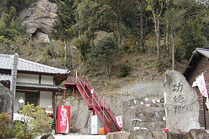
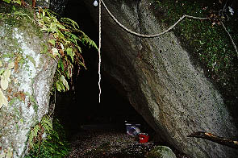
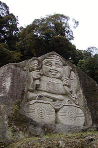
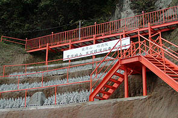
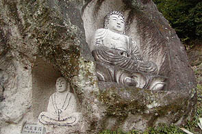
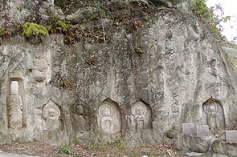
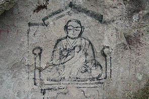
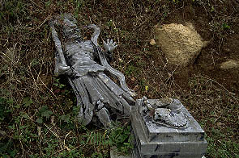

功徳院/大分県庄内町
湯布院から大分市に向かう国道に福禄大黒天しあわせの鐘という看板が見えた。
その看板が発する何やらただならぬ雰囲気を感じ取り（「妖気！」とかいって髪の毛が立ったりします）、看板の示す通り脇道に入って行った。
行けども行けどもそれらしきところがないので諦めて引き返すと国道から入って幾らもしない交差点に「←福禄大黒天」という看板が壊れて落ちてました。
看板リペア夜露死苦。
さて、そんなこんなで福禄大黒天なるスポットに到着する。功徳院というお寺だ。

境内は背後に山を背負った地形で赤い階段のさらに先に石段が延びているのがお判りいただけるだろうか。
階段の右手には石像がたくさん並んでいる。新しいものがほとんどだ。
また、境内には造りかけの台座などがあちこちに散乱しており工事中っぽい。

石段を登り切ると洞窟がある。奥の院である。中には護摩焚き場や不動様（ここは真言宗の寺である）があり、神秘的な雰囲気。

山腹には大きな大黒天の磨崖仏が。もちろんナイス顔。

雛壇上に並べられた五百羅漢。赤い階段や手摺が効いている。工場っぽくてかっこいいぞ。
五百羅漢の右奥にはこんな磨崖仏も。デッサンが狂っているようないないような微妙〜なところが何とも言えないイイ感じ。

上右写真の左端の仏像なんぞ頭円柱ですよ。つくりかけなんだろうけど。

まだまだ境内には磨崖仏が増殖中。磨崖仏といえば昔のモノ、と思い勝ちだが、こうして現在でもつくられているのだ。
ただ、つくられている石像や磨崖仏の雑多具合からこの先、愛知の風天洞みたいな方向性を向いているような気がしてチョット心配。
これ、あと500年位したら文化財みたいな扱いになるんでしょうか。20世紀を代表する大分の磨崖仏とかいって。

でも、仁王さんが倒れてましたよ。メンテ夜露死苦。
つくり続けながら廃虚化していくのはガウディのサグラダファミリア同様、つくる事に一生懸命すぎてつくった部分のケアまで行き届かないという事なのだろう。
このような伽藍造営への猪突猛進ぶりは個人的には大好きである。
帰ってきてから功徳院のホームページがあったので見てみたら山頂に石像の福禄大黒天としあわせの鐘なる鐘があることが判明。
私が訪れた時は山頂へのゲートが閉まっていたので行かなかった、というか五百羅漢辺りでお腹一杯になっちゃったので肝心の福禄大黒天としあわせの鐘の看板の事をすっかり忘れてました。
で、功徳院のホームページはこちら。
2002.11.
珍寺大道場 HOME